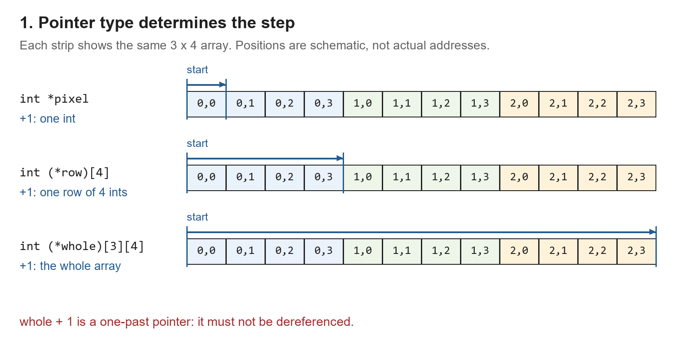
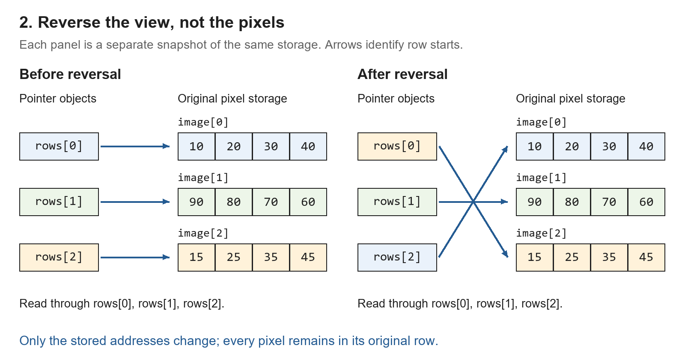
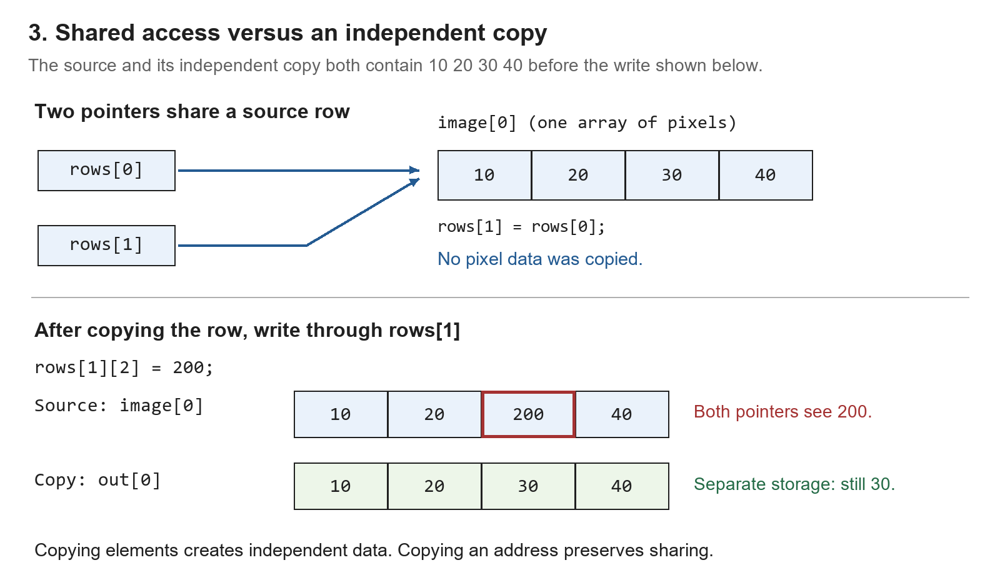
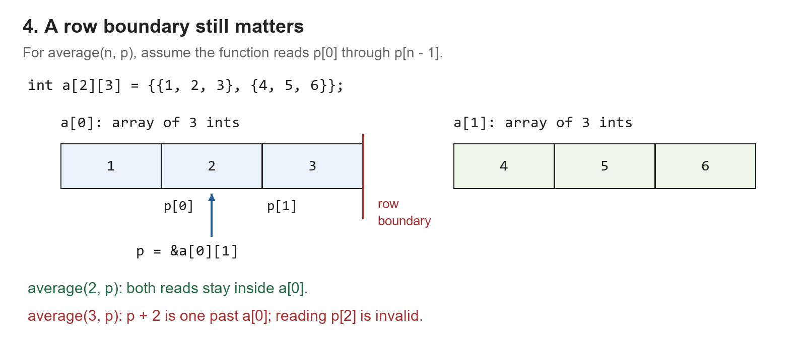

Lab 5: Arrays of Pointers and Pointers to Arrays
Theme: Reordering Image Rows
Suggested duration: 110 minutes
To change the order of rows in an image, must we move its pixels, or can we rearrange pointers instead? In this lab, you will build two ways to access the same data, investigate how changes propagate through shared pointers, and create an independent copy.
1. Objectives and Workflow
- Distinguish an array of pointers from a pointer to an array.
- Explain how the pointed-to type determines the step taken by pointer arithmetic.
- Pass two-dimensional arrays and arrays of row pointers to appropriate functions.
- Distinguish reordering addresses, modifying shared data, and copying elements.
- Check both parameter types and valid access ranges.
Use C and fixed-size arrays. No dynamic allocation, file input, or image library is required. Represent grayscale values as integers from 0 to 255, with each row containing exactly four pixels. Begin with the supplied data; additional tests can use other fixed arrays.
Predict first, observe second, explain third. Preserve your original predictions in your notes. Use printed addresses or a debugger to check pointer relationships, not just the displayed image.
| Activity | Time |
|---|---|
| Declarations, addresses, and pointer steps | 20 minutes |
| Build a view using row pointers | 20 minutes |
| Reverse the view, investigate sharing, and make a copy | 40 minutes |
| Diagnose parameter and boundary mistakes | 20 minutes |
| Checks and discussion | 10 minutes |
Sorting rows by average brightness is an optional extension. Complete the shared-data and independent-copy experiments first.
2. Investigation A: Same Starting Location, Different Steps
int image[3][4] = {
{10, 20, 30, 40},
{90, 80, 70, 60},
{15, 25, 35, 45}
};
int *pixel = image[0];
int (*row)[4] = image;
int (*whole)[3][4] = ℑCopy and complete the table before running your code. Give sizes in terms of sizeof(int) first, then record the measured sizes on your machine.
| Pointer | Type of the pointed-to object | Size of that object | Where does adding 1 lead? |
|---|---|---|---|
pixel | |||
row | |||
whole |
Print each pointer and the result of adding 1. Use %p with a conversion to void * for object-pointer addresses and %zu for sizes. For example:
printf("pixel = %p, pixel + 1 = %p\n",
(void *)pixel, (void *)(pixel + 1));
printf("sizeof *pixel = %zu\n", sizeof *pixel);Also inspect sizeof *row and sizeof *whole. Do not assume a fixed integer or pointer size. Address values can vary across runs.
Discuss: Why can these pointers identify the same starting location yet move by different amounts? Which of the three incremented pointers can be dereferenced here? A pointer just past an array or object may be formed for appropriate pointer arithmetic, but it must not be dereferenced.
Now interpret these declarations in complete sentences:
int *rows[3];
int (*p)[4];Which declaration creates three pointer objects, and which creates one pointer object? Explain the role of the parentheses.
Checkpoint: Explain the difference between sizeof row and sizeof *row. One describes the pointer variable; the other describes the object type it points to.
Visual guide: Pointer steps: an int, a row, and the whole array (open after your prediction)

3. Investigation B: A View of the Image
A row view in this lab is an array storing the starting addresses of image rows. It does not contain a second copy of the pixels. Build one:
int *rows[3];
for (int i = 0; i < 3; i++) {
rows[i] = image[i];
}Implement print_rows() and compare its output with print_image(), which is provided in the starter program. Initially, both should show the same rows in the same order.
Predict the effect of this change, then run it:
int *temp = rows[0];
rows[0] = rows[2];
rows[2] = temp;- Do the two printing functions still produce the same row order?
- Has the first row in the original
imagearray changed? - How many pixel values were copied during the swap?
- Which original element does
rows[0][1]now identify?
Checkpoint: Draw the three row pointers before and after the exchange. Show only one set of original pixel data, and label each arrow with its position in rows.
Visual guide: Before and after reversing a row view (open after your prediction)

4. Main Task: Reorder, Share, and Copy
4.1 Required Functions
void print_image(int image[][4], int height);
void print_rows(int *rows[], int height);
void reverse_rows(int *rows[], int height);
double row_mean(const int *row, int width);
void copy_rows(int *rows[], int height, int out[][4]);The starter supplies print_image(). Complete the other four functions. Except for row_mean(), the row width is fixed at four.
- For each nonempty view, the caller supplies
heightvalid row pointers, each giving access to four writable integers in a row. The underlying arrays remain alive throughout all calls. heightis nonnegative. A height of zero means no rows are accessed; null-pointer handling is not required.row_mean()receives a valid range ofwidthelements within one row, withwidth > 0. Use floating-point division.copy_rows()receives a separate output array with at leastheightrows of four elements. Output storage must not overlap any source row.
4.2 Reverse the Row Order
Implement reverse_rows() by exchanging pointer values. Do not exchange individual pixels or allocate another image. Use a temporary variable of the appropriate pointer type inside the function.
For the supplied image, the reversed view should be:
15 25 35 45 90 80 70 60 10 20 30 40
Printing image directly should still show its original order. Reversing the view twice should restore the original pointer order.
Discuss: In Lab 4, swapping only local pointer variables did not exchange the caller's integers. Why does assigning to rows[i] inside this function change the caller’s row-pointer array? Identify the actual objects being assigned to.
4.3 Modify Data through the View
Starting from the reversed view of the original sample, predict the effect of rows[0][1] = 255;. Record the exact image[r][c] location you expect to change. Then execute the statement and print both representations.
Next, use fresh sample data and investigate two view entries that point to the same row:
/* Start with the original row order. */
for (int i = 0; i < 3; i++) {
rows[i] = image[i];
}
rows[1] = rows[0];
rows[1][2] = 200;Print the view and the original image. Which displayed rows change? Is this an invalid pointer access, or valid access to shared data? Is the view still a permutation containing each original row exactly once?
Checkpoint: Explain why distinct positions in the row-pointer array need not identify distinct pixel rows.
4.4 Create an Independent Copy
Restore the original one-pointer-per-row view, reverse it, and implement copy_rows(). Use nested loops to copy pixel values into out in the current view order.
Immediately after copying, out should display the same values as the view. Change out[0][0] and check the original image. Then change a source pixel and check whether the copy changes.
Do not attempt out = image: C arrays cannot be assigned this way. Copying row pointers into another pointer array would also not create independent pixel storage.
| Operation | Objects changed | Does it create independent pixel storage? |
|---|---|---|
Exchange entries of rows | ||
Assign to rows[i][j] | ||
Copy pixel values into a separate out array |
Visual guide: Shared pixels and an independent copy (open after your prediction)

5. Starter Program
The template compiles, but the unfinished functions do not yet implement the required behavior. Keep the initial sample unchanged for your first test; add fresh test arrays for subsequent experiments.
#include <stdio.h>
#define WIDTH 4
#define HEIGHT 3
void print_image(int image[][WIDTH], int height)
{
for (int i = 0; i < height; i++) {
for (int j = 0; j < WIDTH; j++) {
printf("%4d", image[i][j]);
}
printf("\n");
}
}
void print_rows(int *rows[], int height)
{
/* TODO: Print each row through its stored pointer. */
}
void reverse_rows(int *rows[], int height)
{
/* TODO: Reverse pointer order without changing any pixels. */
}
double row_mean(const int *row, int width)
{
/* TODO: Return the mean using floating-point division. */
return 0.0; /* Placeholder: replace this. */
}
void copy_rows(int *rows[], int height, int out[][WIDTH])
{
/* TODO: Copy the pixel values in view order into out. */
}
int main(void)
{
int image[HEIGHT][WIDTH] = {
{10, 20, 30, 40},
{90, 80, 70, 60},
{15, 25, 35, 45}
};
int *rows[HEIGHT];
int out[HEIGHT][WIDTH] = {0};
for (int i = 0; i < HEIGHT; i++) {
rows[i] = image[i];
}
printf("Original image:\n");
print_image(image, HEIGHT);
printf("Initial view:\n");
print_rows(rows, HEIGHT);
reverse_rows(rows, HEIGHT);
printf("Reversed view:\n");
print_rows(rows, HEIGHT);
printf("Original storage after reordering:\n");
print_image(image, HEIGHT);
for (int i = 0; i < HEIGHT; i++) {
printf("View row %d mean: %.2f\n",
i, row_mean(rows[i], WIDTH));
}
/* TODO: Predict, then test rows[0][1] = 255. */
/* Print both representations and identify the changed object. */
copy_rows(rows, HEIGHT, out);
printf("Independent copy:\n");
print_image(out, HEIGHT);
/* TODO: Modify out[0][0], then print out and image. */
/* Add the other tests from the lab using fresh data as needed. */
return 0;
}No keyboard input is necessary. You may add it as an extension after completing the required investigations.
6. Optional Extension: Order Rows by Mean Brightness
Use row_mean() to arrange the row view from highest mean to lowest. Exchange only pointers, leaving the original pixel storage unchanged. Rows with equal means may appear in either order; stable sorting is not required.
For the original sample, the row means are 25, 75, and 30, so the view should reference original rows 1, 2, and 0, respectively. Use fresh values if earlier experiments modified pixels.
void sort_rows_by_mean(int *rows[], int height)
{
for (int i = 0; i < height - 1; i++) {
int best = i;
for (int j = i + 1; j < height; j++) {
/* TODO: Update best if row j has a larger mean. */
}
/* TODO: Exchange rows[i] and rows[best] as pointers. */
}
}Test identical rows and two different rows with equal means, such as {0, 0, 100, 100} and {50, 50, 50, 50}. Explain why equal averages do not imply equal contents or equal addresses.
7. Investigation C: A Matching Type Is Not Enough
7.1 Check the Access Range
Assume that average() reads p[0] through p[n - 1]. Classify each call below and justify the range it would read:
double average(int n, const int *p);
int a[2][3] = {
{1, 2, 3},
{4, 5, 6}
};
average(3, a[0]); /* A */
average(2, &a[0][1]); /* B */
average(3, &a[0][1]); /* C */For each call, list the elements it is intended to access. Does every access remain within the row from which the pointer was obtained? Analyze any invalid case without executing it.
Adjacent rows in a two-dimensional array occupy consecutive storage, but each row is still a separate array of elements. Do not assume that an int * into one row can be indexed across the row boundary merely because another row follows in memory. A pointer to the position just past a row cannot be dereferenced.
Visual guide: Two valid reads versus a read past a row (open after your prediction)

7.2 Match the Representation to the Interface
void process_matrix(int a[][4], int height);
void process_rows(int *rows[], int height);
/* image and rows are initialized as in the earlier activities. */
process_matrix(image, 3); /* A */
process_rows(rows, 3); /* B */
process_matrix(rows, 3); /* C */
process_rows(image, 3); /* D */Identify which calls match the declared parameter types. For each mismatch, explain how the function expects to locate a row and what the supplied argument actually represents. Do not add casts to silence the diagnostic.
In function parameters, int a[][4] is adjusted to int (*a)[4], whereas int *rows[] is adjusted to int **rows. The former locates rows of four integers; the latter accesses stored pointer values. These are different representations.
Discuss: Why does a cast not create a table of row pointers inside an integer matrix? Likewise, casting a pointer into the middle of a row to a pointer-to-array type does not create a new array object there or make out-of-bounds indexing valid.
8. Tests, Checkpoints, and Submission
Test the following with fresh data where needed. All matrix tests retain a width of four; create separate fixed arrays for different heights.
| Test | Evidence to record |
|---|---|
| Odd and even row counts | The view reverses correctly while original pixels stay unchanged. |
| One row; zero active rows | No unnecessary changes or invalid accesses. Use existing valid storage for the zero-height call. |
| Reverse twice | The original view order returns. Also inspect the once-reversed result; a function that does nothing would pass only the twice-reversed check. |
| Two equal-content rows | Distinguish their addresses from their equal values. |
| Two entries referring to one row | A write through one entry is visible through the other. |
| Copy into separate storage | Later writes to the copy and source do not propagate between them. |
| Row means | Check known means, including a fractional result such as 0.25 for {0, 0, 0, 1}. |
Submit:
- Your C source with the four required functions completed. Mark any optional sorting work separately.
- A pointer diagram showing the row view before and after reordering, and brief expected-versus-observed test notes.
- Three pieces of evidence: pointer reordering preserves original pixels; a write through the view changes original pixels; a write to an independent copy does not.
- Your classifications for the access-range and function-call examples, plus a short explanation of why
int **andint (*)[4]are not interchangeable.
Be ready to identify where the pixels live, where the pointers live, and which objects each function modifies.